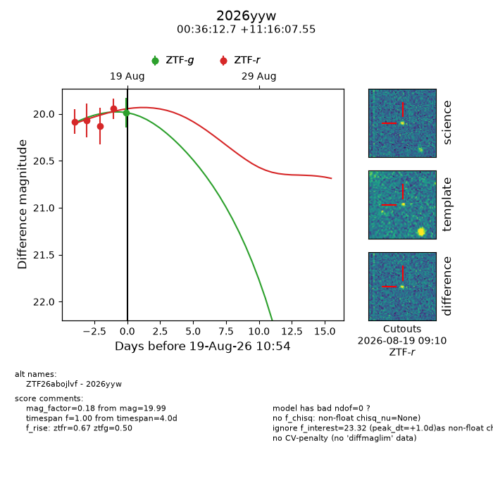
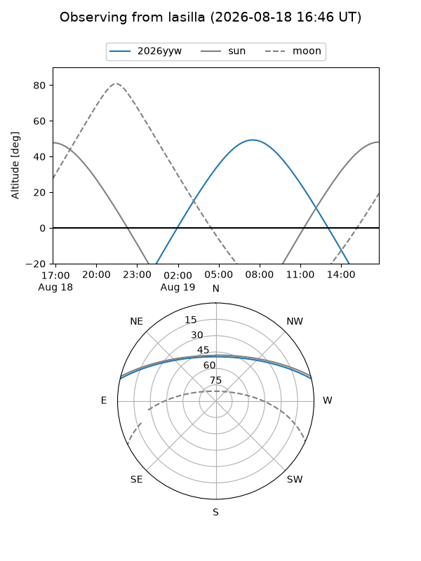
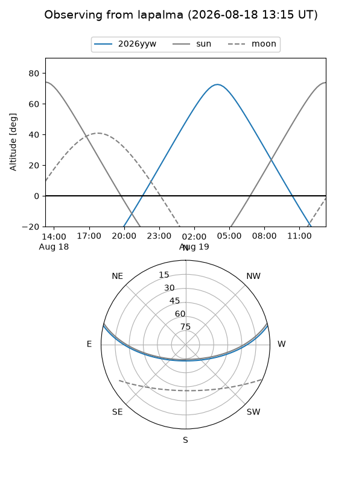
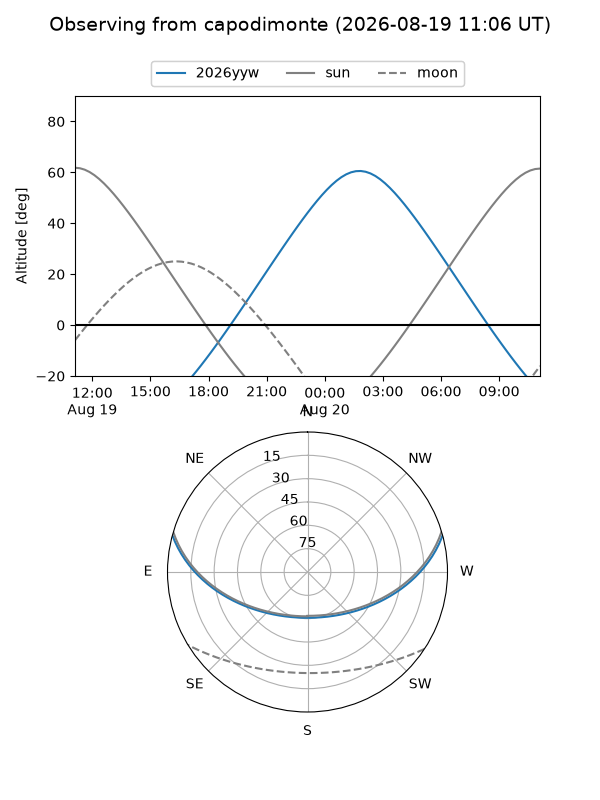
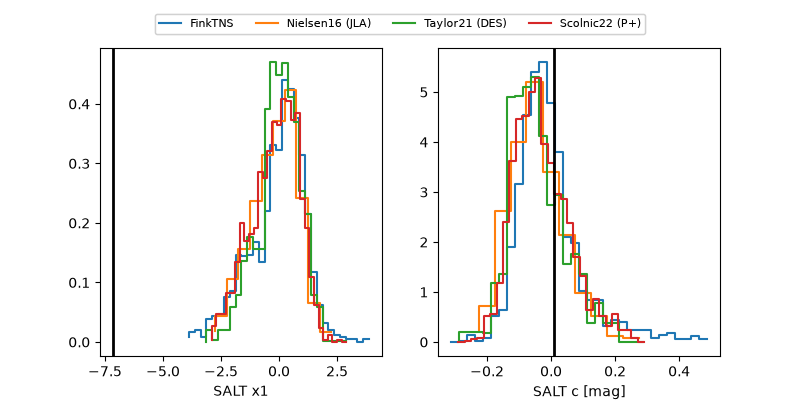

2026yyw
Target 2026yyw at 2026-08-19 10:57
Aliases and brokers:
FINK-ZTF: ztf.fink-portal.org/ZTF26abojlvf
Lasair-ZTF: lasair-ztf.lsst.ac.uk/objects/ZTF26abojlvf
ALeRCE-ZTF: alerce.online/object/ZTF26abojlvf
YSE-PZ: ziggy.ucolick.org/yse/transient_detail/2026yyw
TNS name: wis-tns.org/object/2026yyw
Direct TNS query: direct search
alt names
ZTF26abojlvf (ztf,fink_ztf)
2026yyw (tns,yse)
Coordinates:
equatorial (ra, dec) = 9.0530,+11.26876
equatorial (HMS+DMS) = 00:36:12.72,+11:16:07.55
galactic (l, b) = (116.9383,-51.42570)
Flags:
TNS type: nan
peak dt: +1.0
Photometry:
last ztfg=19.99, ztfr=19.94
1 ztfg, 4 ztfr detections
Lightcurve

Visibility



Additional plots
